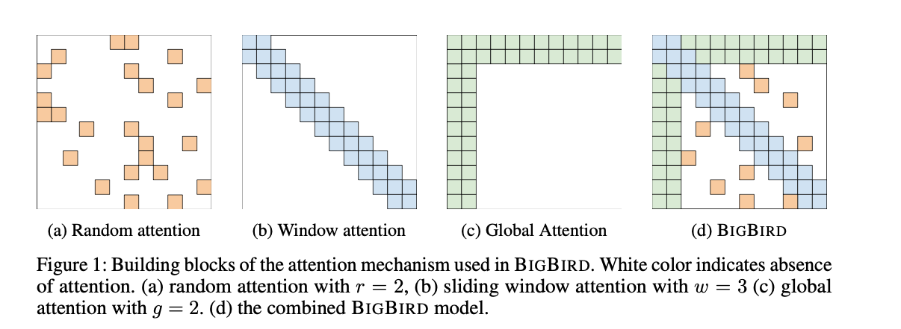
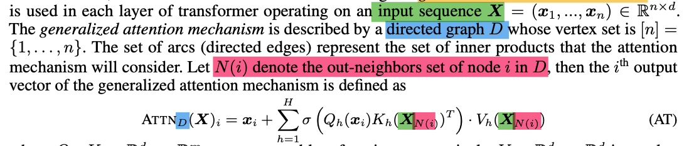
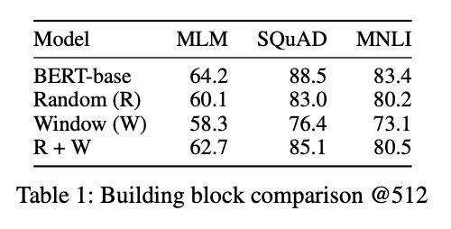
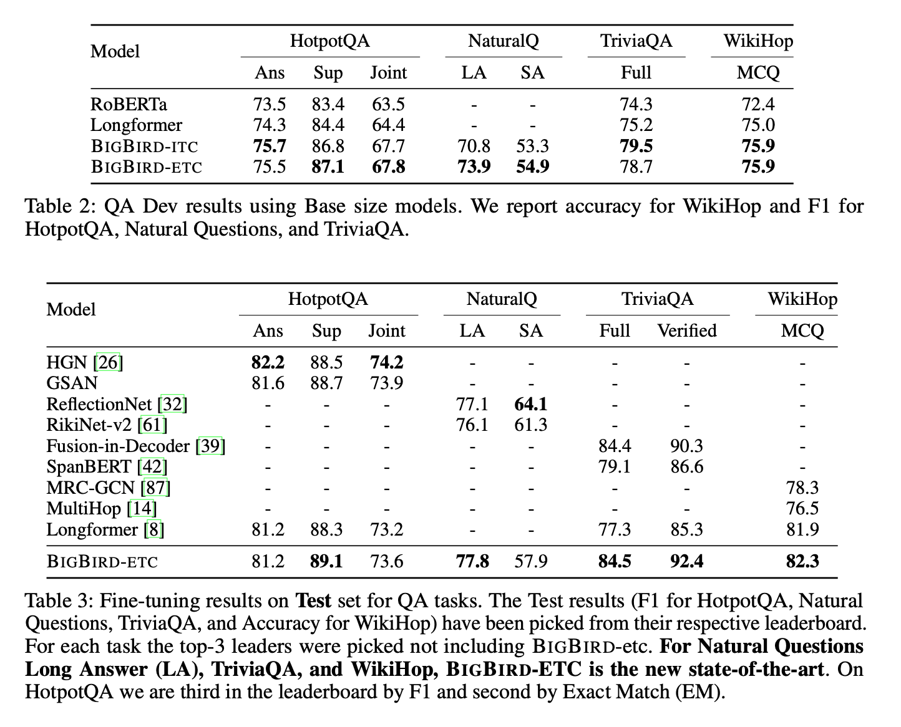

1. Read the title and make an opinion of what’s in the paper (e.g., the area, the task)
Big Bird: Transformers for Longer Sequences
It seems pretty clear to me that the paper is tackling the sequence length problem of BERT who’s attention is a function of squared sequence length, making longer sequences difficult to attend to efficiently. I suspect this paper proposes a way to attend to longer sequences at the same efficiency as BERT, or a more efficient solution that allows for longer sequence lengths.
2. Read the abstract well and form a hypothesis of
- What’s new in the paper?
- Do you have a clear overview about what the paper is all about?
[a] core limitation is the quadratic dependency (mainly in terms of memory) on the sequence length due to their full attention mechanism
This situates the problem of memory for current models using self-attention.
We propose, BIGBIRD, a sparse attention mechanism that reduces this quadratic dependency to linear.
This is the core proposal of the paper.
We show that BIGBIRD is a universal approximator of sequence functions and is Turing complete, thereby preserving these properties of the quadratic, full attention model.
This is very interesting to me, as to the practical outcome of this. If this is a universal approximator and Turing complete, does that mean that practically that is achievable given standard training? Is SGD able to leverage the proven power to be as effectual as full attention?
Along the way, our theoretical analysis reveals some of the benefits of having O(1) global tokens (such as CLS), that attend to the entire sequence as part of the sparse attention mechanism
Without having a great understanding of their proposal, is only a few tokens given O(1) while the rest is O(N^2)?
The proposed sparse attention can handle sequences of length up to 8x of what was previously possible using similar hardware.
8x is a great upgrade. The paper notes how this improves performance on Q&A and summarization tasks.
3. Look at the images and extract a set of “questions” about what is not clear about their method from the images. Now your job is to answer these questions by reading the paper.

I find it interesting that global attention (green) is two blocks wide. Isn’t the CLS token only one token?
This is an excellent figure because it clearly shows the approach taken by BIGBIRD, by a combination of 3 independent attention mechanisms for an approximation to full self-attention. And this is it, the only figure in the paper
4. Read the method aiming to answer your “questions” about the paper. Focus on understanding only the things relevant for the story (i.e., to understand the contribution).
The Directed Graph is key to seeing the difference from full self-attention. I’ve highlighted some key points from the paper in color, to show the directed graph in Blue, while pink is the node i in .

It is important to note that if the is full, you recover the attention mechanism from the original Transformer paper. By viewing as a graph problem this paper shows that now well established graph techniques can be used to reduce the complexity.
It is well-known that random graphs are expanders and can approximate complete graphs in a number of different contexts including in their spectral properties
They discuss two key requirements for these approximate graphs: small average path length between nodes and locality.
Small Average Path Length: This is the random attention mechanism. By creating a graph with enough nodes, you can get a graph where information is able to flow quickly enough through the nodes, approximating a complete graph without the memory penalty.
Locality The paper addresses heuristically that most NLP problems requires local knowledge, which informs the choice of having sliding windowed attention.
5. Read the experiments to convince you that the show results are caused by their claim. Be aware that the experiments highlighted are the best scenarios and are fully hyper-parameter tuned.
It seems that the approximate graph does not provide the same level of performance as the full graph, which is understandable. Looking at table 1, the BigBIRD implementation falls short of BERT’s SQuAD performance by a few points when the sequence length is 512.

Their experiments sections show that the proposed attention mechanism does indeed perform well on a number of long sequence tasks, achieving state of the art in a number of areas.

6. Make sure you answered all your questions. Did the authors convince you that their story has the effect that they claim?
This paper is a full 42 pages long, but has a single focus on proposing the BIGBIRD attention mechanism and the outcomes of that. Because they include a long appendix, I see this as being well written and comprehensive without dragging.
Although this proposed mechanism might not be the final solution to solving the memory problem of full attention, I think it is a great work that is well written, clear to read and comprehensive.